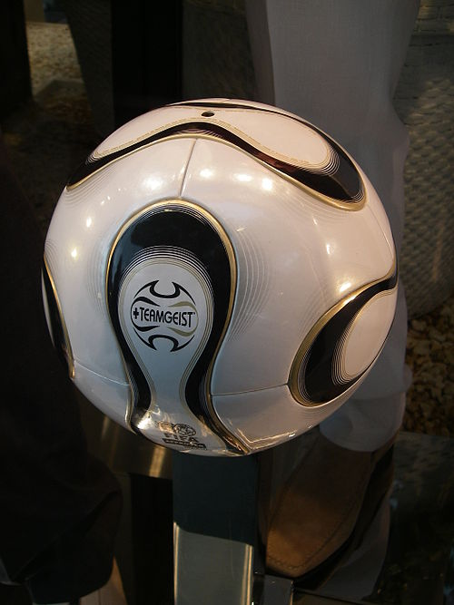

 A football or soccer ball is the ball used in the sport of association football. The ball's spherical shape, as well as its size, mass, and material composition, are specified by Law 2 of the Laws of the Game maintained by the International Football Association Board.[1] Additional, more stringent standards are specified by FIFA and other big governing bodies for the balls used in the competitions they sanction. Early footballs began as animal bladders or stomachs that would easily fall apart if kicked too much. Improvements became possible in the 19th century with the introduction of rubber and discoveries of vulcanization by Charles Goodyear. The modern 32-panel ball design was developed in 1962 by Eigil Nielsen, and technological research continues to develop footballs with improved performance. The 32-panel ball design was soon joined by 24-panel balls as well as 42-panel balls, both of which improved on performance prior to 2007.[citation needed] A black-and-white patterned spherical truncated icosahedron design, brought to prominence by the Adidas Telstar, has become a symbol of association football.[2] Many different designs of balls exist, varying both in appearance and physical characteristics.[3] History First years of football codes In the year 1863, the first specifications for footballs were set by the Football Association. Previous to this, footballs were made out of inflated animal bladder, with later leather coverings to help footballs maintain their shapes and sizes.[4] In 1872, the specifications were revised and have been kept essentially unchanged by the International Football Association Board. Differences in footballs made since this rule came into effect have been with the material used to create them. Footballs have dramatically changed over time. During medieval times balls were normally made from an outer shell of leather filled with cork shavings.[5] Another method of creating a ball was using animal bladders to make it inflatable inside. However, these two styles of footballs were easy to puncture and were inadequate for kicking. It was not until the 19th century that footballs developed a more modern appearance. Vulcanization In 1838, Charles Goodyear introduced vulcanized rubber, which dramatically improved football.[6] Vulcanization is the treatment of rubber to give it certain qualities such as strength, elasticity, and resistance to solvents. Vulcanization of rubber also helps the football resist moderate heat and cold. Vulcanization helped create inflatable bladders that pressurize the outer panel arrangement of the football. Charles Goodyear's innovation increased the bounce ability of the ball and made it easier to kick. Most balls of this time had tanned leather with eighteen sections stitched together. These were arranged in six panels of three strips each.[7][8] Reasons for improvement During the 1900s, footballs were made of leather, with a lace of the same material (known as tiento in Spanish) used to stitch the panels. While leather was ideal for bouncing and kicking the ball, heading the football (hitting it with the player's head) was often painful. This discomfort was likely due to the leather absorbing water from rain, which significantly increased the ball's mass and led to head or neck injuries. By around 2017, this had also been associated with dementia in former players.[9] Another problem of early footballs was that they deteriorated quickly, as the plastic used in manufacturing varied in thickness and in quality.[7] The ball without the leather lace was developed and patented by Romano Polo, Antonio Tossolini and Juan Valbonesi in 1931 in Bell Ville, Córdoba Province, Argentina.[10][11] This innovative ball (named Superball) was adopted by the Argentine Football Association as the official ball for its competitions in 1932.[12] Latest developments The deformation of the football when it is kicked or when the ball hits a surface is tested. Two styles of footballs have been tested by the Sports Technology Research Group of Wolfson School of Mechanical and Manufacturing Engineering in Loughborough University; these two models are called the Basic FE model and the Developed FE model of the football. The basic model considered the ball as a spherical shell with isotropic material properties. The developed model also used isotropic material properties but included an additional stiffer stitching seam region. Manufacturers are experimenting with microchips and even cameras embedded inside the ball. The microchip technology was considered for the goal-line technology. The ball used in the 2018 FIFA World Cup in Russia had an embedded chip which did not provide any measurements, but provided 'user experience' via smartphone after connecting with the ball via NFC.[13][14][15] Future developments Companies such as Umbro, Mitre, Adidas, Nike, Select and Puma are releasing footballs made out of new materials which are intended to provide more accurate flight and more power to be transferred to the football.[16][17]